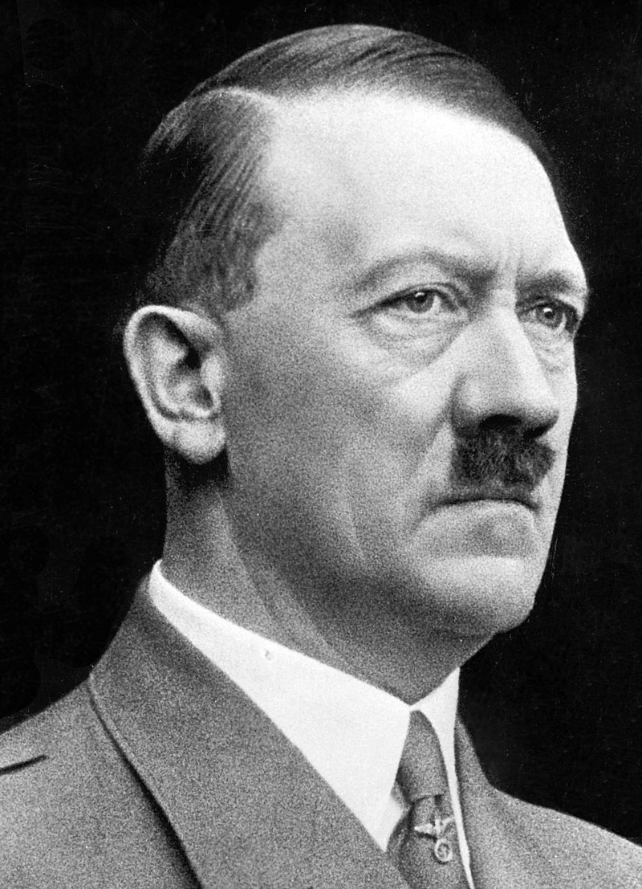

Adolf Hitler
(1889–1945)
National Socialist German Workers' Party
Adolf Hitler (1889–1945) was the leader of the National Socialist German Workers' Party (Nazi Party) and Chancellor of Germany from 1933 to 1945. He rose to power in a period of political instability, promising to restore Germany's strength and pride after World War I. Under his leadership, the Nazi regime pursued an aggressive expansionist policy, leading to World War II. Hitler's ideology included a virulent form of anti-Semitism, culminating in the Holocaust, where six million Jews and millions of others were systematically murdered. His rule ended with Germany's defeat and his suicide in 1945.
Biographies
- "Hitler: A Biography" by Ian Kershaw
- "Hitler: 1889-1936 Hubris" and "Hitler: 1936-1945 Nemesis" by Ian Kershaw
- "Hitler: Ascent, 1889-1939" and "Hitler: Downfall, 1939-1945" by Volker Ullrich
- "Hitler: A Study in Tyranny" by Alan Bullock
- "Hitler: A Biography" by Joachim Fest
- "Hitler: 1889-1945" by Werner Maser
- "Adolf Hitler: The Definitive Biography" by John Toland
- "Hitler: The Pathology of Evil" by George Victor
- "Hitler: Beyond Evil and Tyranny" by R.H.S. Stolfi
- "Hitler: A Short Biography" by A.N. Wilson